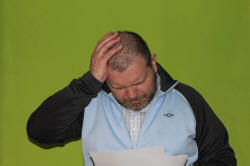
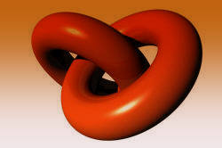

The passive voice
What follows assumes that you have followed the guide to voice in the initial plus section of the site or that you are familiar with its content. In particular, the following will not cover the structural aspects of the passive in English but focuses instead on use and meaning.
|  |
Remind yourself ... |
... of the 5 reasons we choose to use the passive in English and then click here.
- Because we are less interested in the agent and more concerned
with the patient. For example, in:
She was arrested
We are not concerned with the agent (probably, we know it's the police or some other law-enforcement people). We are concerned with what happened to her (the patient, not the agent). - Because it's obvious what the subject is so unnecessary to state
it. For example, in:
He is widely admired
We are aware that it is people who generally do the admiring. - Because we don't know what the subject is. For example, in:
My car has been stolen
I don't know who stole the car. - Because, stylistically or for social reasons, we are concerned
not to identify the agent. For example, in:
The garden has been allowed to become overgrown
The patient was misdiagnosed - Because we want to emphasise the agent. This is often a
spoken form because we need to stress the agent when we speak.
For example:
The window was broken by her (not me)
or
She was arrested by the police (not the customs people)
You may have combined one or more of these reasons but they are set out separately here in the interests of clarity.
 |
 |
End-focus and End-weighting – the fifth reason |
There is, in fact, a fifth reason for using the passive. It
is actually more universal than any of the four stated above.
In English, and many other languages, there is a documented tendency
to do two things:
- Place new information towards the end of the utterance. This is end focus.
- Place more complex phrases and clauses towards the end of the utterance. This is end weighting.
Examples will help:
- end-focus
- Who wrote the report? It was done by Peter.
Here, the new information required by the question has been placed at the end and, to do that, the speaker has selected the passive.
Why is the car not here? It was taken for a service.
Here, again, the service is the essential information that is new to the hearer so the passive is selected. - end-weighting
- I was not surprised that he was allowed to leave early
in order to get home before the snow came.
Here, the complex finite clause has been shifted to the end and the passive voice chosen to accommodate this. Compare the much more awkward:
That he was allowed to leave early in order to get home before the snow came did not surprise me.
The concepts of end-focus and end-weighting are not always easy to explain to learners or for them to grasp and apply but they serve to explain many uses of the passive including, but not limited to, the four we identified above. For more, see the guide to postponement, linked in the list of related guides at the end.
 |
Markedness |
The passive is, in most languages, marked.
That is to say that the neutral form of the sentence is normally the
active and the passive is selected because the speaker / writer
wishes to draw attention in some way to an item in the sentence
which is seen as significant.
There is a general guide to the concept of markedness linked in the
list at the end.
|  |
Theme-rheme structure: the sixth reason |
This is not the place to discuss the nature of theme-rheme
structures. There is a guide to the area linked from the list
of related guides at the end.
Here, it is enough to note that the passive is frequently used to
maintain and create cohesion in texts.
It sometimes works like this. Either:
- The noun phrase which appears in a passive sentence is elevated to the subject position in the next or a subsequent sentence or
- The subject of the verb in the first sentence is demoted in a subsequent passive sentences.
Examples will probably help:
- Sentence 1: The building work was accomplished on time and within budget.
Sentence 2: The construction took longer than we expected but we are happy with the result. - Sentence 1: The raw materials come in by lorry to the main depot.
Sentence 2: There, the seeds are filtered and the process can begin.
An alternative is that the agent of the passive in the first sentence is raised to the subject position in sentence 2 and then may be further raised to the subject of an active third sentences, like this:
The window was broken by the boys next door. They were forced to pay for it by their parents. The boys pooled their pocket money and took it to the neighbours.
 |
Some terminology explained: subjects, objects, agents, patients, themes and rhemes |
Subject and Object

If we have a normal active sentence such as:
The girl ate some chocolate
most people can unhesitatingly identify that we have:
- a subject (the girl)
- a verb (ate)
- an object (some chocolate)
However, when it comes to passive sentences, people have more
difficulty describing the parts of the sentence and especially in
establishing what the subject and the object are in
Some chocolate was eaten by the girl
because we are used to the idea that it is the subject which
does something and the object is the thing or person to which
something happens.
Here's the answer (or one that will do for our purposes):
- In the active sentence the subject is the agent (she who
did the eating) and the object is the patient (that
which was eaten).
We have a subject agent and a patient object. That is most people's intuitive understanding of the terms subject and object. - In the passive formulation, the subject of the verb is now
the patient (some chocolate) and the agent is now
introduced by the by-phrase (and is no longer the
subject of the verb).
We have, therefore, a subject patient rather than a subject agent.
Agent and Patient
Some confusion sometimes occurs when people confuse the nature of agents and patients with those of subjects and objects of verbs. So, here is the second part of the answer:
- The role of subject and object is determined, in English,
syntactically, by word ordering with the Subject preceding the
verb and the Object following it. In other languages, the
word and/or its determiner and any other modifying elements will
be marked in some way to show its case:
nominative forms for the subject and accusative forms for the
object (and, perhaps, dative forms for the agent).
Some languages, such as Japanese, have an agentive case, too.
As we have seen, subjects can be agents or patients depending on the sense. - Agents and patients, on the other hand, are not determined
syntactically, they are determined by the information they
encode and how the information flows along the clause or
sentence.
In other words, it is the communicative function which determines what is agent and what patient rather than grammatical function as is the case with subjects and objects.
The agent, whatever its grammatical form, is that which does the action.
The patient, whatever its grammatical form, remains that which is acted upon by the agent.
Theme and rheme
An allied but distinct way of looking at the structures from a functional grammar standpoint is to distinguish between the theme and its accompanying rheme. So, here's the third part of the answer:
- The theme of an utterance is its starting point, what the
sentence is about. So, in:
The girl ate the chocolate
the theme is The girl
but in
The chocolate was eaten by the girl
the theme is The chocolate. - The rheme is everything that follows the theme until a new
theme appears, usually in a separate sentence. So, in:
The girl ate the chocolate
the rheme is ate the chocolate
but in
The chocolate was eaten by the girl
the rheme is was eaten by the girl.
Many find that considering Agent vs. Patient and/or theme vs. rheme a clearer way of explaining the passive than focusing on Subject vs. Object.
 |
English is unusual |
English is unusual, not because it forms the passive with
auxiliary verbs (many languages do that), but because it allows
passive structures which other languages do not.
Here are 10 examples of unusual passive uses which, depending on the
learners' first language(s), may cause both formal and conceptual
difficulties.
 |
ditransitive verbs |
We can form a passive in English from both a direct and an
indirect object so we can have:
Active: I gave him a book
Passive 1: He was given a book
Passive 2: A book was given to him
Many other languages do not allow both forms, usually reserving
the passive for the direct object only, so only the second passive
sentence here could be formed. This creates both
productive and receptive error.
A list in PDF format of the commonest ditransitive verbs in English
is available via a link in the list of related guides at the end.
 |
prepositional complements |
English can raise the complement of a preposition (i.e., the noun
phrase which completes the prepositional phrase) to make it the
subject of a passive sentence. For example:
Active: She spoke to the people in the bar
Passive: The people in the bar were spoken to
Active: They worked on the car
Passive: The car was worked on
This leaves the preposition 'stranded' but is common in English.
A lot of languages don't do that at all and it will confuse many
learners. Many languages cannot split a prepositional phrase
like this and it will produce error such as
*It was worked on the car
For more on how preposition and adverb particles are dealt with
in the passive forms of multi-word verbs, see the guide, linked in
the list of related guides at the end.
 |
the verb to be |
English uses the same verb (be) to form both a dynamic
passive and a stative passive. For example:
Dynamic passive:
During the game, the window was broken
Stative passive:
It was cold in the room because the window was broken
In many languages, this confusion between state (arguably the
adjectival use of the participle) and action is not possible because
a different verb would be used in each case. For example, in
German, the first sentence would be
Das Fenster wurde gebrochen
in which the verb werden
signals the dynamic passive and
Das Fenster war gebrochen
in which the verb sein
signals the stative passive.
Many other languages do something like that and the English use of
be for both meanings is not immediately grasped.
Learners who are looking for parallel constructions in English to
those in their first languages may, therefore, be induced into
errors such as:
The window became broken.
English can make a dynamic-stative distinction with the verb
get as in, e.g.:
The window got broken during the game
and that will be intuitively acceptable to learners whose first
languages routinely make the distinction.
Stylistically, however, some consider the use of get for
this sense to be too informal in some contexts.
Many languages, such as Greek and Polish, do not readily convert
participles into adjectives in the way that English does and so the
confusion is avoided. It means, however, that these learners
may be reluctant to use a past participle adjectivally and hunt for
a distinct adjective form (which may not be available). That
can lead to error such as:
*The money was transferal from the bank
If the state of something is described, it may be called a
resultative passive but most analyses will simply refer to it as the
adjectival use of the participle.
A rich source of confusion in English is that we use the verb be to
signal both the passive voice and the continuous/progressive aspect.
In a sentence such as
She was being questioned by the police
The verb signals the passive in its first form (was)
and the progressive in the second form (being). That
is simply hard to grasp for a whole range of learners whose
languages differ from English in this respect (see below for more).
 |
participle or adjective |
This is an allied point. In English it is not always clear
whether the participle form is actually part of a passive
construction or an adjective. For example:
She was decided
They were determined
are both adjectival and describe the people. They are
also, obviously, formed from verbs but it is not possible to make an
active sentence:
*Someone decided her
*Someone determined them
but in
They were exhausted
She was delighted
the case is not so clear because we can form active sentences such
as:
The work exhausted them
The film delighted her
Many languages will have a different form for an adjective
formed from a verb and the verb's tense form. English doesn't
and this causes both receptive and productive error.
 |
stative verb uses |
Some verbs in English are almost always used in stative senses.
The verbs understand, say, think and know are
obvious examples. In these cases a passive construction loses
the sense of an agent and a patient. With these verbs, a dummy
it is often inserted to form the subject. For example:
He is known to be hot tempered
It is known that he is hot tempered
She is understood to have left the country
It is understood that she has left the country
He is said to be an expert
It is said that he is an expert
I am thought to be intolerant
It is thought that I am intolerant
Few of these constructions exist in the same way in other
languages and they cause trouble for learners.
Note, too, the stative use in, e.g.
The law was designed to protect children
 |
more than one auxiliary verb |
English has more than one auxiliary verb to make a passive so we
can have:
She was imprisoned
which refers to a state or action depending on context. It can mean
She was taken to jail
a dynamic passive, or
She
spent time in jail
a stative passive.
But we can also make a passive with get, as in:
She got imprisoned
in which only the first sense of the example
with be can be understood here because got implies
a dynamic passive.
The agent by-phrase is acceptable with the verb be but
sometimes unusual
or plain wrong with the verb get:
So, for example:
She was imprisoned by the authorities
is fully acceptable in a way that
?She got imprisoned by the authorities
is not, and
He was taught by his sister
is also acceptable, but
*He got taught by his sister
is not.
 |
complex tenses |
English can combine the passive with the full range of tense and
aspect forms as well as modal auxiliary verbs. For example:
She will have been arrested
The car will be being serviced
She had been spoken to
The wall was being built and had been being built for some time.
The car should have been being serviced but the workshop made a
mistake
Some consider the complex forms combining
progressive with perfect with passive with a modal to be clumsy but
they are, nevertheless, possible in English.
Many languages, especially those with a more limited range of modal
auxiliary verbs, cannot do this kind of thing.
Unpacking what each auxiliary verb implies in such sentences is
cognitive challenging and that leads to receptive error.
Productively, such forms are also challenging, especially in spoken
languages because the learner has to do two things:
a) get all the auxiliary verbs in and in the right order
b) produce a fluent utterance with all the weak forms of, e.g.,
should, have and been in place: /ðə kɑː ʃəd həv bɪn
ˈbiːɪŋ ˈsɜː.vɪst/
colligation with make, let and have |
If the term colligation is unfamiliar, there is
a guide on this site linked in the list of related guides at the
end.
Briefly,
it refers to grammatical collocation.
When make is used passively, its colligational
characteristics change. For example:
They made him go
He was made to
go
It is simply non-intuitive to many learners that the verb
make should require a different grammar when it is used in the
passive but that the verb let does not require such a
change so we can have:
I let the class out early
and
The class was let out early
with no changes to the grammar of the verb
Errors such as:
*She was made visit him
*He was let to go
result.
Additionally, the verb let often cannot be used with a
following, or catenative, verb in the passive, so, e.g.:
*They were let to play outside
is not available, but when an adverb modifier instead of a
non-finite verb is used:
They were let outside
is acceptable.
The verb have when it is used causatively to mean
oblige also behaves anomalously so we allow the active:
They had me do the work again
but not the passive:
*I was had do the work again
 |
double passives |
Sometimes, the object of a verb is a passive to-complement.
The verb expect is commonly used this way but there are
others such as require. For example:
We require you to finish the work (active sentence with
you as the object of require)
We require the work to be finished (passive sentence 1 with
the work as the patient)
You are required to finish the work
(by us) (passive sentence 2
with you as the patient)
The work is required to be finished (by you) (passive sentence 3 –
the double passive)
Some people consider the double-passive construction to be
clumsy, even wrong.
It is certainly a form which learners are rarely going to need to
produce but it crops up in written English more often than it should
and takes a bit of unpacking to get at the meaning.
other passive verbs and the ergative |
English has a number of other verbs which convey passive meaning.
For example:
She had her house painted
They got their money stolen
We have to have the car serviced
(For more on causative constructions,
see the guide, linked in the list of related guides at the end.)
Other examples of passive meaning but active constructions are:
The house needs fixing up
The dog wants feeding
The shirts sold well
Many languages will simply not allow an active construction
such as:
The shirts retailed for £12
to mean the passive idea of:
The shirts were retailed for £12
These are examples of what is called the
ergative case, in which the ostensible grammatical subject is
semantically the object of the verb. So, for example, we can
have:
She cooked the vegetables
in which we have an obvious subject and object and from which we can
make a passive:
The vegetables were cooked (by her).
However, this verb in English is one of the group which allows the
ergative, too, so we can also have:
The vegetables cooked nicely
which appears to be an active clause but in which the object has
been raised to the subject position and the sense is passive.
The ergative case is marked morphologically
in many languages (see below for a short list) but English does not
mark it so a sentence such as
The door opened
or
The air warmed
look like simple active sentences but the sense is often
passive and might be expressed as
Someone opened the door / The door was opened
The draught pushed door open / The door was pushed open by
the draught
The sun warmed the air / The air was warmed by the sun
A short list of verbs which allow ergative, pseudo-passive constructions in English includes:
| break | close | change | cook | grow | move | start | stop |
| split | shut | vary | boil | expand | swerve | begin | land |
| tear | slam | swing | bake | enlarge | avoid | take off | halt |
| crack | bang | alter | poach | spread | evade | create | cease |
The by + agent structure is not available with some of
these verbs or is questionable:
She had / got her house painted by the man down the road
is acceptable, but
*The house needs repairing by him
*The dog wants feeding by someone
*The shirts sold well by the shop
are all disallowed.
Some languages are much more forgiving and have no passive
structures at all, simply using the active form and allowing the
context to determine whether the sense is active or passive.
Others do things differently and may have an alternative set of verb
inflexions or auxiliaries to signify this sense of the passive (see
below).
Some other verbs work similarly and there is a noticeable
tendency to elide the passive auxiliary in English and produce
sentences such as:
The garden flooded
The bus is now boarding
where the subject is semantically illogical.
Stylistically, the use of the ergative form performs a similar function to the use of passives in that it allows the speaker / writer to avoid identifying the agent. Hence its treatment here.
Constraints on using the passive |
More limitations operate in the passive voice than they do in the active.
- Transitivity:
Intransitive verbs such as arrive, go, lie, sneeze and sit cannot have a passive form simply because there is no object to raise to the status of agent. However: - Active-only verbs:
some verbs in English are transitive but only used, in certain senses, in the active form. In other words, they are semantically forbidden the passive use. For example: - The verb bear, meaning to have children, is rare in
the active and there is an odd spelling issue with the existence
of 'e' in the past participle in the active and its
absence in the passive. The passive use is obligatory when
referring to dates and places of birth, e.g.:
- The verb reputed only appears in the passive:
- A few verbs are generally preferred in the passive (but can be used actively). When they are used actively, the sense is sometimes marked for emphasis:
- Prepositional verbs are less cooperative than simple verbs in the passive. When the use is metaphorical or figurative, the passive is permitted. When these verbs are used in their literal sense they are followed by prepositional phrases rather than adverb particles and the passive is at best very clumsy, even unacceptable. For example:
- Non-finite clauses cannot usually be raised to the agentive position. For example:
- Co-references: if the object and subject of the verb are the same, the passive is not allowed. For example:
- Possessives: if the subject can be said to possess the object, e.g., by the use of a possessive determiner or by implication, the passive is not usually allowed. For example:
- Modal meaning shifts: some modal auxiliaries imply a change of meaning when the passive is used. For example:
How other languages see the passive |
You can see from the above that there are ample reasons for confusion with passive structures in English. The ways that various languages handle the passive voice are unpredictable (bewilderingly so when one ventures beyond European languages) so the area needs careful handling. There can be no attempt to be exhaustive here so you will need to rely on your own research or knowledge about your learners' first language(s).
Dynamic and stative passives |
We saw above that in English, the distinction between dynamic
passives and stative passives is not consistently signalled so, for
example
The window was broken
can mean either:
Someone broke the window
or
The window was in a broken state
We can distinguish the two concepts with the passive verb get
as in, e.g.
The window got broken in the fight
but many will consider the use colloquial or even slang.
Many other languages, including German, Swedish, Spanish and
Italian, use a different verb to distinguish the ideas (sein
and werden in German, ser and estar in
Spanish, essere and venire in Italian, vara
and bli in Swedish etc.).
The middle voice |
In some languages, such as Albanian, Bengali, Tamil, Icelandic
and Swedish, there is a middle voice which is neither active in the
full sense nor properly passive.
For example, the ergative use of the verb, in which the ostensible
grammatical subject is semantically the object of the verb, in:
The shoes sold well
The beans soaked in water overnight
or
The soup boiled over
would be rendered in these languages by a different grammatical
structure from the active form used in English or a recognisable
passive form because the sense is actually passive. Shoes,
beans and soup do not, conceptually do such things: people sell
shoes and people prepare food.
- Italic languages
- These languages, such as French, Italian, Spanish etc., often
use a similar auxiliary to form passives. That, however,
is where the similarities mostly end. Ditransitive verbs
with their dual possible passive forms, in particular, and many
of the other phenomena above will cause both form and meaning
problems. The forms of complex tenses and aspects are
particularly troublesome because these languages tend to inflect
the verb rather than use auxiliaries to signal tense.
There is also a tendency in some of these languages, e.g., French, to avoid the passive formulation altogether by employing what is sometimes called the 'fourth person', a form usually translated into English as 'one'. For example, in French, it is possible to translate
The door was opened
as
On a ouvert la porte (literally, One has opened the door)
Finnish and Estonian also routinely use a similar formulation. - Chinese languages
- do not conjugate verbs to show tense or voice. They do, however, use a particle, bèi, to signal the passive voice and alter the word order, raising the object of the active sentence to the subject position in the passive. Passive constructions are conceptually not problematic but the forms in English are. This is even worse with progressive and perfect aspects for which there is no corresponding form. All 10 of the issues above will be problematic.
- Korean and Japanese
- both signal the passive by verb suffix. The concept is
straightforward but the use of auxiliaries is troublesome.
Korean has no equivalent of causatives at all. Equally,
the preposition passives (2, above) are not known.
Japanese also uses the passive to show respect and reserve and
has a separate passive form which is used for something
unwelcome happening to someone. That form is akin to the
English use of the passive causative such as
They had their house broken into - Thai
- has no auxiliary verbs or verb inflexions. Disturbances to familiar word ordering will also present problems.
- Turkish
- has a passive structure so the concept is not difficult. However, the language often has separate verbs for those in English which have both transitive and intransitive uses. The multiple meanings and uses of be also cause problems.
- Arabic
- distinguishes between the passive and active only in
pronunciation. Arabic speakers may ignore passive
constructions and use the active in all cases in English.
They will, however, have fewer problems understanding the
structures in section 10 above, especially forms such as The
shirts sold well.
(Arabic is probably better described as a language group rather than a single language because the many varieties are often not mutually comprehensible.) - Russian and Polish
- have passive constructions and the concept and forms are not too difficult for speakers of these languages to grasp. The use of multiple auxiliary verbs in complex tenses will, however, cause serious difficulty.
- Germanic and Scandinavian languages
- use a passive verb (usually become rather the be) and also employ auxiliaries. The simple forms of the passive will present few terrors but more complex and unusual forms will be difficult. Note, too, the point above about the use of different verbs to form dynamic and stative passives.
 |
Teaching the passive – eating the elephant |
This is a major area of grammar so the following is not prescriptive. It is simply some advice.
- The passive needs to be approached piecemeal because of the complications and varieties of forms. Until the basic form is mastered, more complicated forms will simply sow confusion.
- You cannot teach the passive at all unless your learners can handle issues of transitivity.
- Concept checking needs to be regularly and consistently
done. For example:
etc.She has been speaking Who spoke? Did anyone speak to her? She has been spoken to Who spoke? Did she speak? I had my house repaired Who did the work? Who asked for the work? She was being questioned Who asked the questions? Who answered? - If the passive formulation is known and understood
for a simple tense, it can easily be taught for perfect and
progressive aspects because the same auxiliary is used in all
cases.
It is a small step from being able to see that the active form
They gave me a prize
bears some equivalence to
I was given a prize
and from there to understand the relationship between
They have given me a prize
and
I have been given a prize
After that, more complex tense forms can be handled but only if the aspect is clear. - The four main reasons we select passive forms in English (above) need to be taught separately. There's no future in jumbling them up. Learners who speak languages with similar or even parallel structures will have little difficulty appreciating the reasoning. Others may have serious conceptual issues to overcome. Teach meaning, i.e., speaker intention, first.
- Bear in mind that speakers / writers select the passive voice
for a reason. The active and passive forms are not simple
equivalents so the user's intention must be
clear.
Be very wary, therefore, of exercises which require learners to transform active to passive sentences or vice versa. Such exercises send out the message that the two forms are simply interchangeable with no change in meaning. As we saw above, that's just not true. - The alternative forms of passives in English (section 10, above) will cause problems for everyone but the concept of passiveness is inherent in all of them. Conceptually, then, they are easier to handle after straightforward passives have been acquired.
| Related guides | |
| voice | for a general and more elementary guide |
| causative | for a guide to a specific type of passive construction |
| multi-word verbs | for a consideration of how passives are (and are not) made with phrasal and prepositional verbs |
| ditransitive verbs | a simple list with examples and some notes of the most common ones |
| colligation | for a guide to how some items are primed for certain structures |
| markedness | for a general guide to how English marks particular proposition |
| postponement | for a guide to this form of word ordering |
References:
Campbell, GL, 1995, Concise Compendium of the World's Languages,
London: Routledge
Dryer, MS and Haspelmath, M (eds.), 2013, The World Atlas
of Language Structures Online, Leipzig: Max Planck Institute
for Evolutionary Anthropology, available online at http://wals.info
Lock, G, 1966, Functional English Grammar, Cambridge:
Cambridge University Press
Quirk, R, Greenbaum, S, Leech, G and Svartvik, J, 1972, A Grammar of
Contemporary English,
Harlow: Longman
Swan, M and Smith, B, (Eds), 2001, Learner English, 2nd Edition,
Cambridge: Cambridge University Press